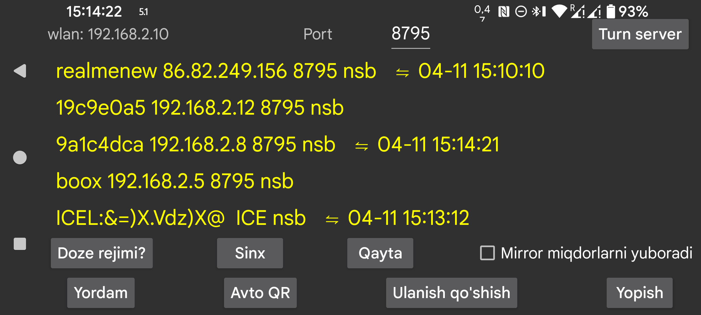

ar be de es fr hi it nl pl pt ru sv tr uk uz zh en
Bu sahifa boshqa qurilmaga ma’lumot yuborish yoki undan ma’lumot qabul qilish uchun xizmat qiladi. Juggluco ishlayotgan boshqa Android qurilmaga ulanib, shu yerdagi ma’lumotni o‘sha qurilmada ham ko‘rsatish mumkin.
Qurilma mirror sifatida Skanlar ma’lumotini qabul qilganidan keyin, u sensor bilan Bluetooth orqali bevosita bog‘lanishi ham mumkin. Sensor bilan faqat bitta qurilma to‘g‘ridan-to‘g‘ri ishlashi uchun IP/TCP orqali Oqim qiymatlari kelganda chap menyu→Sensor→Bluetoothni ishlatish avtomatik ravishda o‘chiriladi.
Bu ekranda wlan dan keyin qurilmaning mahalliy Wi‑Fi IP manzili ko‘rsatiladi. Uy tarmog‘idagi boshqa qurilmada shu IP ni ko‘rsatish kerak bo‘ladi. Masofadan ulanayotgan bo‘lsangiz, modem yoki router sozlamalari ham kerak bo‘lishi mumkin.
Port dan keyingi maydonda ilova ulanishlar uchun tinglaydigan TCP portini o‘zgartirish mumkin.
Ulanish qo‘shish tugmasi qaysi xostlarga va qaysi usulda ulanishni belgilashga olib boradi.
Android da ishonchli tarmoq ulanishiga turli batareya optimizatsiyalari va fon cheklovlari xalaqit beradi. Doze mode ni bosish shu cheklovlarni kamaytirish haqida ma’lumot beradi.
Agar Juggluco boshqa qurilmadagi Juggluco dan glyukoza olayotgan mirror ilova bo‘lsa, Signallar tugmasi orqali past va yuqori glyukoza signallarini hamda tegishli bildirishnomalarni sozlash mumkin.
Mirror miqdorlarni yuboradi: agar bu ilova boshqa qurilmadagi Juggluco dan dori, ovqat va sportga oid miqdorlarni olayotgan bo‘lsa, ayni ma’lumotlarni shu qurilmada qayta qo‘shish yoki o‘zgartirish kerak emas. Shu belgi yoqilsa, buni qilishning oldi olinadi.
Sinx yangi ma’lumot bo‘lsa ulangan qurilmaga yuboradi yoki yangi ma’lumotni so‘raydi.
Qayta ulash mavjud ulanishni yopib, yangisini yaratadi.
Avto QR bu telefondagi barcha ma’lumotni boshqa qurilmadagi Juggluco ga yuborish uchun ulanish yaratadi. Ikkinchi telefon chap menyu→Foto orqali QR kodni skan qilishi kerak.
Wi‑Fi (faqat Wear OS): odatda Wear OS batareyani tejash uchun bir muddatdan so‘ng Wi‑Fi ni o‘chiradi va telefon bilan ulanish uchun Bluetooth ga o‘tadi. Bu parametr yoqilganda Wear OS dan Wi‑Fi ni uzoqroq yoqib turish so‘raladi, lekin baribir keyin o‘chib qolishi mumkin. Odatda bu kerak bo‘lmaydi, ustiga ustak Wi‑Fi ni majburan yoqib turish batareya sarfini sezilarli oshirishi mumkin.
Mavjud ulanishlar ro‘yxatda ko‘rsatiladi: yorliq, IP port, shuningdek oxirgi muvaffaqiyatli sinxronlashning oy, kun va vaqti chiqariladi.
Ulanish ishlatilishi quyidagi qisqartmalar bilan belgilanadi:
Mirror ulanishlari haqida batafsilroq ma’lumot uchun Ulanish qo‘shish yordam sahifasini va https://www.juggluco.nl/Juggluco/index.html#mirror sahifasini ko‘ring.
Android uchun mo‘ljallangan Juggluco ilovasini Windows, Macintosh yoki Linux kompyuterida Android emulyatori yordamida ham ishga tushirish mumkin, masalan Genymotion. Linux da, xususan Windows ichidagi Ubuntu kabi tizimlarda, Waydroid dan ham foydalanish mumkin.
Emulyatordagi Juggluco ma’lumotni sensor bilan bog‘langan Android telefondan Mirror ulanishi orqali oladi. Android Studio emulyatori va Genymotion da ikki barmoq bilan kattalashtirish/kichraytirish harakati Control tugmasini bosib turib sichqonchani harakatlantirish orqali taqlid qilinadi. Waydroid buni o‘zi qo‘llamasligi mumkin, lekin Juggluco o‘z ichida bu harakatni alohida amalga oshiradi.